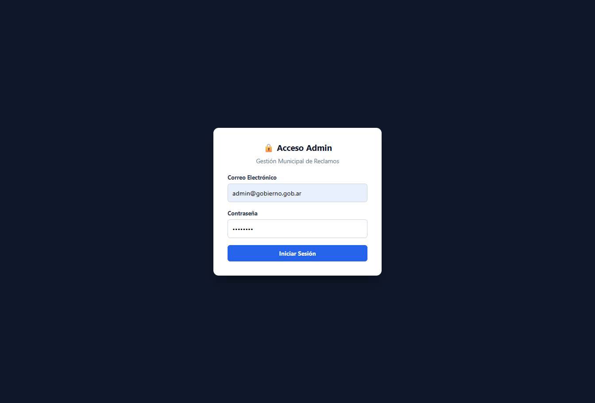

FixApp — Gestión Urbana Inteligente y Cercanía Ciudadana
Solución integral GovTech diseñada para digitalizar, centralizar y optimizar la gestión de incidencias urbanas en tiempo real mediante una PWA rápida y un ecosistema administrativo protegido.
Fragmentación en la gestión municipal
En la gestión municipal tradicional, la recepción de reclamos urbanos (baches, luminarias fuera de servicio, basurales a cielo abierto) sufre de una gran fragmentación. Los vecinos deben recurrir a llamadas telefónicas, trámites presenciales o mensajes informales que terminan perdiéndose o duplicándose. Esto genera un cuello de botella administrativo en las dependencias públicas, falta de trazabilidad en la resolución de problemas y una creciente percepción de desconexión por parte del ciudadano.
Transformación digital y agilidad
FixApp transforma un proceso burocrático de días en un flujo digital de menos de 30 segundos. Mediante una arquitectura basada en una PWA (Progressive Web App) de rápida adopción para el ciudadano y un ecosistema administrativo protegido, mantiene un estricto blindaje de datos personales conforme a la Ley N° 25.326.
Interfaces y Arquitectura Funcional
Portal Ciudadano / Pantalla Vecinal (PWA)
Diseñada bajo el principio Mobile-First para garantizar accesibilidad instantánea sin instalaciones pesadas.
- Mapa Interactivo y Geolocalización: Fijar ubicación exacta por GPS o selección manual.
- Carga Express (30s): Formulario dinámico con categoría, descripción y evidencia fotográfica optimizada en la nube.
- Anonimización por Diseño: Protección activa de la identidad del vecino en el seguimiento público.
Panel de Administración y Control de Accesos
Centro de mando seguro exclusivo para operadores y funcionarios municipales.
- Autenticación Segura (RBAC): Control de acceso por credenciales cifradas y tokens JWT para proteger las operaciones del Estado.
- Gestión por Estados: Interfaz en tiempo real para filtrar y actualizar solicitudes (Pendiente, En Proceso, Resuelto).
- Trazabilidad de Cuadrillas: Asignación de tareas y registro fotográfico previo al cierre de cada reclamo.
A. Pantalla de Autenticación Segura

B. Dashboard de Gestión y Listado General
Panel de Telemetría y Dashboard Estadístico
Módulo analítico para directivos e intendencia enfocado en la toma de decisiones basada en datos.
- Gráficos (Charts): Visualización interactiva del estado general de reclamos y distribución por categorías.
- Métricas de Eficiencia (KPIs): Tarjetas de control en tiempo real sobre volúmenes por categoría (baches, luminarias, basura, etc.).
Tecnologías de nivel de producción
Frontend: HTML5, Tailwind CSS, JavaScript Vanilla (ES Modules), PWA.
Backend: FastAPI (Python), RESTful, validación y sanitización (Anti-XSS, Rate-Limiting).
Base de Datos: PostgreSQL en Supabase (RLS) + Cloudinary para gestión de medios.
Infraestructura: Despliegue en Vercel / Render, agnóstico y portable a AWS.
Hacia un modelo proactivo de ciudad inteligente
FixApp demuestra cómo el software local puede resolver problemas comunitarios de gran escala combinando soberanía tecnológica, resiliencia ante ciberataques y una experiencia de usuario intuitiva. Un sistema de alto rendimiento, auditable y listo para producción.